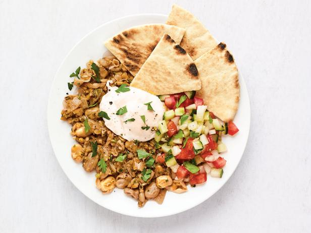
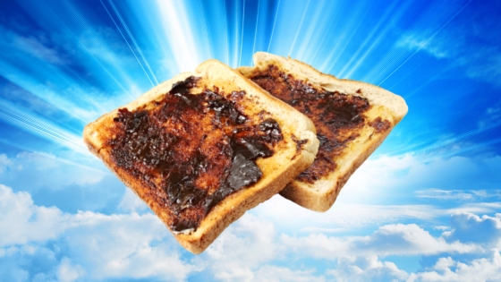

Ful and Eggs with Vegemite Toast


Ful mudammas is a staple Egyptian breakfast. This recipe is my current version of many many iterations. I hope you enjoy this hearty breakfast!
Ingredients:
- Fava Beans
>I use canned "California Garden" beans and prefer those, but any canned fava beans will do. You can also prep dried fava beans and there are many recipes online to do so
- Two Eggs
- Bread, to be toasted
- Butter, for bread
- Olive oil, about 2 tablespoons
- Cumin, to taste
- Salt, to taste
- Sumac, to taste
- Chili oil (optional)
- Hot sauce (optional)
Steps:
- Open the can of fava beans, put half of the can in a pot. Simmer while continuing the rest of the recipe.
- Prep your eggs however you like. I prefer mine medium boiled following Chef John's steamed eggs recipe found here.
- Toast bread.
- Butter and vegemite bread, set aside.
- Drain beans and combine in bowl or plate with eggs.
- Season with olive oil and your preferred seasonings. I use half a teaspoon of cumin, a teaspoon of sumac, a teaspoon of salt, a teaspoon of chili oil, and a healthy splash of hot sauce.
- Enjoy!